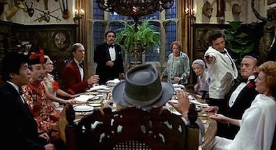

Murder by Death
Also known as The Best Movie Ever!
Despite not knowing him, the world's most famous detectives can't pass up the offer of a "dinner and murder" invitation from wealthy Lionel Twain. Each has no idea until their arrival at Two Two Twain who else will be in attendance. The dinner part of the invitation runs into problems due to the non-communication between Twain's blind butler, Jamesir Bensonmum, and Twain's new deaf-mute and non-Anglophone cook, Yetta. On the murder side, the guests initially believe Twain will try to kill each of them. However, Twain eventually announces his rationale for the gathering: that one of the people at the dinner table will be murdered before midnight, and that Twain will consider himself the greatest detective if his guests, who are now trapped in the house until dawn, cannot figure out who committed the murder, that person also at the dinner table. If one does figure out who committed the crime, he/she will be the recipient of $1 million and the exclusive rights to the story. So the guests anxiously await the stroke of midnight, with those still alive after that time trying to figure out both motive and the opportunity to murder before the rise of dawn and before the murderer has the opportunity to strike again on one or all of them.
- Written by Huggo
Cast of Characters
| Directed by | Robert Moore | |
|---|---|---|
| Produced by | Ray Stark | |
| Written by | Neil Simon | |
| Music by | Dave Grusin | |
| Starring | Eileen Brennan | David Niven |
| Truman Capote | Peter Sellers | |
| James Coco | Maggie Smith | |
| Peter Falk | Nancy Walker | |
| Alec Guinness | Estelle Winwood | |
| Elsa Lanchester | ||
Did you know?

Nominations
- Golden Globes, USA 1977 Nominated: Best Acting Debut in a Motion Picture (Male) - Truman Capote
- Writers Guild of America, USA 1977 Nominated: WGA Award (Screen) Best Comedy Written Directly for the Screen - Neil Simon
Sam Diamond: "The last time that I trusted a dame was in Paris in 1940. She said she was going out to get a bottle of wine.
Two hours later, the Germans marched into France."